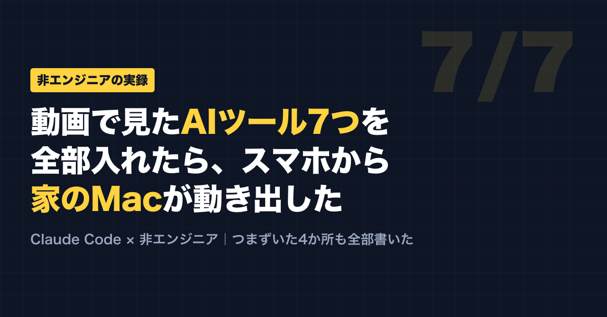
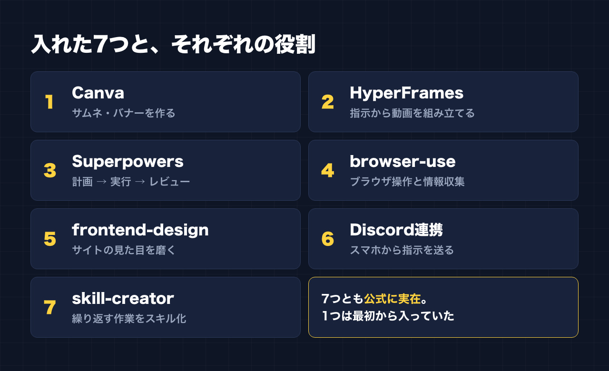
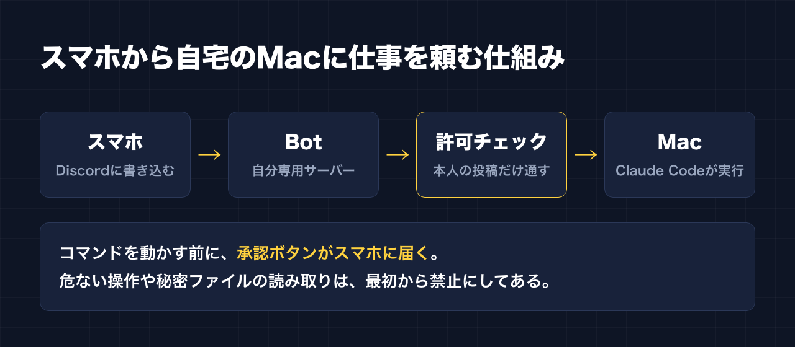
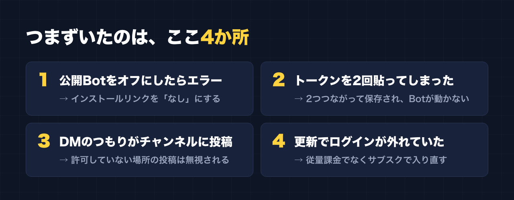
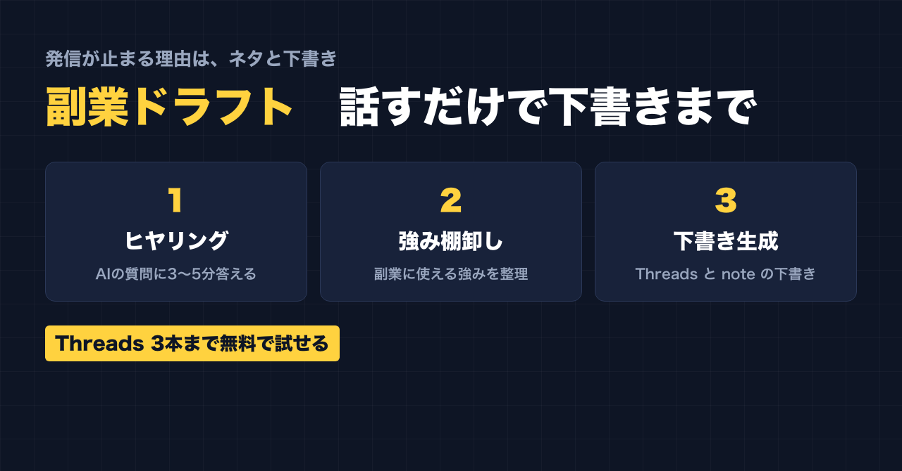

1. タイトルをコピーして、note のタイトル欄に貼る
2. 「本文1をコピー」から順にコピーし、note の本文に貼る
3. 青いラベルの位置に、images フォルダの同じ名前の画像を入れる（本文には貼られません）
※ 見出しが普通の文字になった場合は、その行を選んで「大見出し」を設定してください

最初に送ったメッセージは、無視されました。
Discord に「こんにちは」と送っても、何も起きない。「次の」と打っても、「作業教えて」と打っても、画面は静かなままでした。
数時間かけて設定したのに、動かない。
原因は、あとで分かります。そしてその原因は、失敗ではなく「安全装置がちゃんと働いていた証拠」でした。
この記事は、プログラミング経験のない会社員が、動画で紹介されていた「Claude Code に入れておくと便利な7つの機能」を、半信半疑のまま全部入れてみた記録です。
先に結論を3行で書いておきます。
- 7つとも、公式に実在した（1つは最初から入っていた）
- いちばん化けたのは、スマホから自宅の Mac に仕事を頼める「Discord 連携」
- つまずいたのは4か所。どれも、知っていれば一瞬で避けられる
「動画の言うとおりに打つ」のが怖かった
きっかけは、ある紹介動画でした。「Claude Code にこれを入れておけ」と、7つの機能が並んでいました。
- Canva（サムネイルやバナーを作る）
- HyperFrames（指示から動画を組み立てる）
- Superpowers（計画を立ててから段階的に進め、最後にレビューする）
- browser-use（ブラウザを操作して情報を集める）
- frontend-design（サイトや画面の見た目を良くする）
- Discord 連携（スマホから指示を送り、PC で実行して結果を受け取る）
- skill-creator（繰り返す作業を「スキル」として登録する）
便利そうです。でも、動画に出てきたコマンドを、意味も分からないまま自分の PC に打ち込むのは怖い。名前が少し違うだけで、まったく別の、得体の知れないものを入れてしまうかもしれません。
そこで Claude Code には、インストールより先にこう頼みました。
動画をもとにした情報なので、名前も機能も正確とは限らない。公式のドキュメントや開発元で、本当にあるのか確かめてから入れてほしい。
これが、今回いちばんやってよかったことです。
答えは「7つとも本物。ただし1つは入れなくていい」
調べてもらった結果、7つとも Anthropic の公式プラグイン一覧に載っていました。提供元もはっきりしています。Canva は Canva 社、HyperFrames は HeyGen 社、browser-use は Browser Use 社です。
面白かったのは skill-creator です。これは最初から使える状態になっていました。動画を見て慌てて入れていたら、同じものを二重に入れていたことになります。

入れるだけで終わらせず、1つずつ小さく試してもらいました。HyperFrames では、日本語の文字が浮かび上がる3秒の動画が本当にできあがりました。browser-use は、試験用のブラウザで Web ページを開き、見出しを読み取ってみせました。Canva は自分のアカウントでログインするだけで、デザインの作成や編集、サイズ変更、書き出しなど、40種類の操作が使えるようになりました。
ここまでは順調でした。問題は、最後の1つです。
スマホから家の Mac を動かす。便利さと怖さは同じ大きさ
Discord 連携の仕組みは、こうです。
自分しかいない Discord サーバーを作り、そこに自分専用の Bot を置く。スマホからそこに書き込むと、自宅の Mac で動いている Claude Code に届く。Claude Code が作業をして、結果を Discord に返してくれる。

外出先から家の PC に仕事を頼める。夢のような話ですが、裏を返せば「誰かに乗っ取られたら、スマホから自分の PC を好き勝手に動かされる」ということでもあります。
そこで、動かす前に次のルールを決めました。
- 受け付けるのは自分の投稿だけ。ほかの人の書き込みは無視する
- コマンドを実行する前に、スマホに承認ボタンが届くようにする
- ファイルの削除や外部への送信、パスワードの入ったファイルの読み取りは、承認しても動かないよう最初から禁止する
- Bot に渡す権限は最小限にする。「管理者」の権限は付けない
- Bot の鍵（トークン）は、チャットに貼らず PC の中だけに保存する
設定作業そのものは Claude Code がやってくれました。ただ、Discord の画面を操作するのは自分です。ここで4回つまずきました。
つまずいた4か所

1. 「公開 Bot」をオフにしたら、赤いエラー
知らない人に Bot を使われないよう「公開 Bot」をオフにして保存したところ、「プライベートアプリにはデフォルトの認証リンクを設定できません」という赤い文字が出ました。先に「インストール」の画面で、インストールリンクを「なし」にしておく必要がありました。順番の問題です。
2. トークンを2回貼って、Bot が動かない
トークンは、貼り付けても画面に何も表示されない仕組みで保存しました。入ったのか分からず、2回貼ってしまいました。結果、トークンが2つつながって保存され、Bot は動きません。
ここで Claude Code がやったことは、覚えておく価値があります。トークンの中身は一度も画面に出さず、文字数と区切りの形だけを調べて「2つつながっている」と見抜き、どちらが有効かを Discord に問い合わせて、正しい1つだけを残しました。秘密の情報を、見ないまま直したわけです。
3. 冒頭の「無視された」の正体
記事の最初に書いた、返事が来なかった件です。原因は、Bot への DM ではなく、サーバーのチャンネルに書き込んでいたことでした。
安全のため、「許可していない場所の投稿は無視する」設定にしていました。つまり Bot は、言われたとおりに、許可していない場所の書き込みを無視していただけです。そのチャンネルを「自分の投稿だけ」という条件で許可すると、すぐに返事が来ました。
壊れていたのではなく、守っていたのです。
4. 気づかないうちに「従量課金」になりかけた
Canva をつなぐためにターミナルで Claude Code を起動すると、勝手に最新版へ更新され、ログインが外れていました。しかも画面には「API Usage Billing」の文字。これは、使った分だけ課金される方式です。
ここで何も考えずにログインすると、月額プランとは別にお金がかかるところでした。月額プランのアカウント（subscription）を選んでログインし直してから、Canva をつなぎました。
入れて、何が変わったか
いちばん大きいのは、「PC の前に座らないと何も進まない」状態から抜け出せたことです。
平日の日中は本業で手が離せません。それでも、休憩中にスマホから「案件を探して、件数を教えて」と書いておけば、その間に Mac が作業を進めてくれます。
この記事に使っている図も、Claude Code に作ってもらいました。Canva と HyperFrames が入ったので、画像や短い動画づくりも同じように頼めます。
これから入れる人へ、4つだけ
同じことをやる人のために、今回の学びを4つに絞ります。
- 動画や記事で見たツールは、まず「公式で実在するか確かめて」と頼む
- Discord の Bot に「管理者」の権限は付けない。必要な分だけにする
- 見えない入力欄にトークンを貼るのは1回だけ。貼ったら信じて Enter
- ログイン方法を聞かれたら、月額プランの人は subscription を選ぶ
ツールを入れること自体は、思っていたよりずっと簡単でした。むずかしいのは、「どこまで任せて、どこを自分が握るか」を決めることのほうです。
ツールが揃ったあとに待っている、本当の壁
ここからは宣伝です。
ツールが揃うと、次に必ずぶつかる壁があります。「で、自分は何を発信すればいいのか」です。
副業の発信が止まるのは、ツールの使い方が分からないからではありません。多くの場合、「自分の何が強みなのか言葉にできていない」か、「下書きを作る時間がない」かのどちらかです。
そこで作ったのが「副業ドラフト」というツールです。AI の質問に3〜5分答えるだけで、副業に使える自分の強みを棚卸しし、そこから Threads と note の下書きを作ります。

無料で使えるのは、ヒヤリング、強みの棚卸し、Threads の下書き3本までです。自分では当たり前だと思っていたことが、意外な強みとして出てくるかもしれません。まずは試してみてください。
副業ドラフト
https://note-threadssf.onrender.com
X、Instagram、TikTok の台本、note の下書き、1週間分の投稿カレンダーまで使いたい場合は、有料プランがあります（月額2,980円、または買い切り10,000円）。できあがるのはあくまで下書きなので、投稿する前にはご自身で内容を確認してください。
Threads では、こうした試行錯誤を日々発信しています。
https://www.threads.com/@shachiku_mao
最後まで読んでいただき、ありがとうございました。